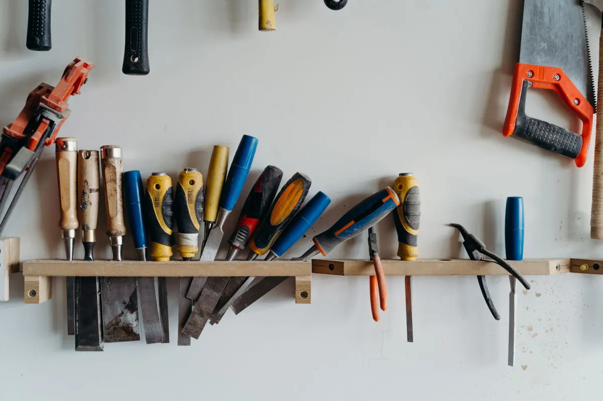

Repair Café
Fixers sit at benches on the first Saturday of the month and mend whatever you carry in. Last year that was 214 things, and 171 of them went home working.

The facts
- When
- First Saturday, 10am to 1pmEleven a year, with a break over the summer.
- Cost
- FreeKoha for parts, if you can.
- Where
- The main hallBenches are at wheelchair height.
- Who runs it
- Hemi WalkerHemi mends things and minds the building, and each fixer has a bench.
- Who it is for
- AnyoneBring something you own, and sit with the fixer while they look.
- Bring
- The broken thingAnd the charger or cord that goes with it.
What came in last year
171 of 214 things went home working.
Lamps and small electrics
47 of 62 fixed
Clothes and curtains
55 of 58 fixed
Bikes
36 of 41 fixed
Toys
19 of 23 fixed
Furniture
12 of 18 fixed
Everything else
2 of 12 fixed
| Kind | Came in | Fixed | Not fixed |
|---|---|---|---|
| Lamps and small electrics | 62 | 47 | 15 |
| Clothes and curtains | 58 | 55 | 3 |
| Bikes | 41 | 36 | 5 |
| Toys | 23 | 19 | 4 |
| Furniture | 18 | 12 | 6 |
| Everything else | 12 | 2 | 10 |
| All of it | 214 | 171 | 43 |
Each plate is one thing. A filled plate went home working.
On the day
Carry it in and tell a fixer what it does and what it has stopped doing. They look at it with you sitting beside them. Some things take a few minutes, some take most of the morning, and some go home unfixed.
Clothes and curtains did best last year, with 55 of 58 mended. The odds and ends were the hardest, with 2 of 12.
Bring
- Lamps, toasters, radios and other small electrics
- Clothes, curtains and anything with a zip
- Bikes, toys and small furniture
Don’t bring
- Microwaves
- Anything that has been wet inside
- Petrol engines
The next four Saturdays
The house is shut from 24 December to 20 January.
10am to 1pm
10am to 1pm
10am to 1pm
10am to 1pm
Tell us what’s broken
A few words about the thing and what it does, or has stopped doing, help a fixer find the right bench. You still need to bring it along on the day.
To tell us ahead, email hello@tidestreet.example or call 04 555 0129.
Next Repair Café
This is a demo, so nothing was sent.
Getting in
- Step-free from Tide Street
- Benches at wheelchair height
- An accessible toilet
- Four car parks and two mobility parks at the door, close to where you carry things in